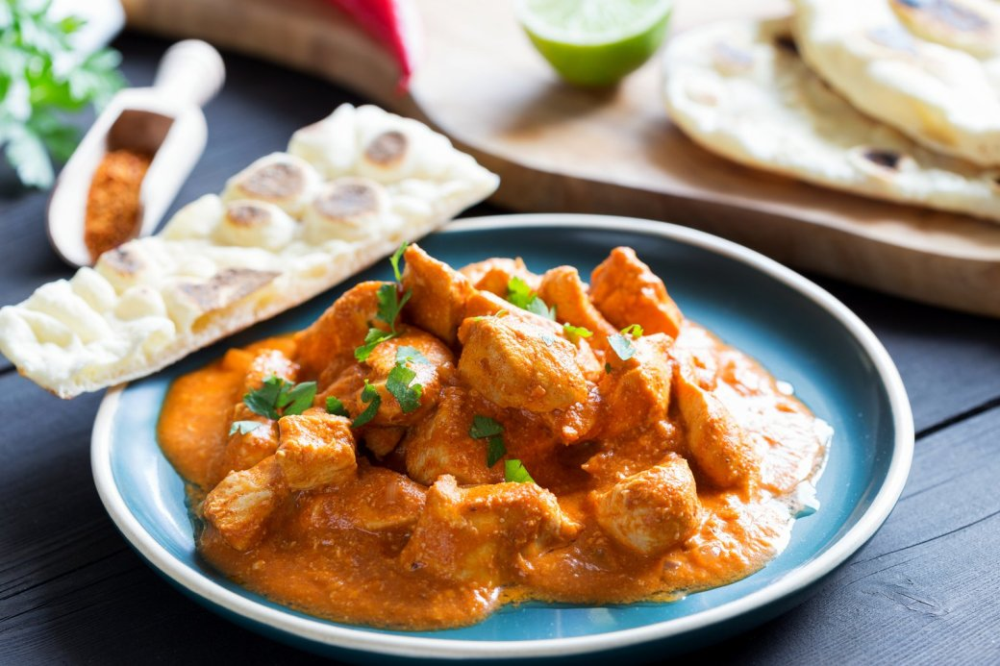
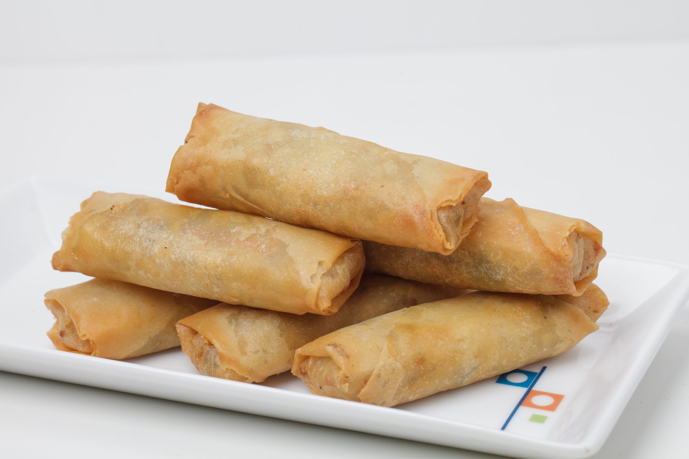
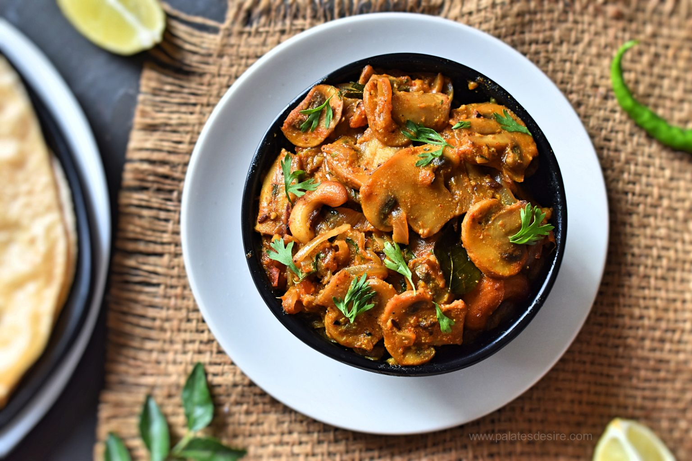

-
Chocolate Chip Cookies
Dive into the universe of Chocolate Chip Cookies, where the aroma of freshly baked treasures awakens your senses and the promise of chocolatey goodness beckons.
View Recipe -
Butter Chicken
Indulge in the rich and aromatic world of Butter Chicken, a beloved classic that tantalizes taste buds with its creamy, flavorful allure.
View Recipe -
Panner Butter Masala

Embark on a culinary journey to savor the irresistible allure of Paneer Butter Masala. Picture succulent cubes of paneer immersed in a velvety symphony of buttery, tomato goodness.
View Recipe -
Veg Spring Roll
Delve into the world of irresistible crunch and vibrant flavors with Vegetable Spring Rolls. Imagine a delicate balance of fresh, colorful veggies wrapped in a crispy embrace, each bite unveiling an orchestra of textures and tastes.
View Recipe -
Chicken Manchuria

Experience the allure of Chicken Manchuria, where tender pieces of chicken are transformed into delectable nuggets of delight.
View Recipe -
Mushroom Masala
Prepare to be enraptured by the allure of Mushroom Masala, where succulent mushroom slices mingle with an intoxicating blend of spices to create a symphony of flavors.
View Recipe